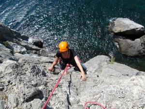

Глава 3, часть 1. В начале славных дел
{kind=link}
Итак, нале, напра или пря, вот в чем вопрос. С какого направления лучше всего начинать, к чему стремиться и как все это выглядит.
— горовосхождения для души. Несложные Горы в теплых районах с минимальными физическими затратами. Если есть желание, возможности и хорошая компания, это лучшее из физкультурных направлений альпинизма. Красота, романтика и минимум напрягов. Практически в любом районе можно найти маршруты от которых можно получить огромное удовольствие.
{kind=link}
— горовосхождения для души, тела и спортивного роста. Крымский трэд. Неплохое направление для начала общения с техникой, если есть желание с самого начала попробовать что-нибудь поинтереснее. Основные достоинства: тепло, отсутствие горняшки, отсутствие китайских подходов, а следовательно не такие высокие требования к ОФП и возможность тратить свои силы не на приобретение мозолей, а на приобретение знаний и навыков. Так же большой плюс — обжитость района. В случае травмы, Вы можете в кратчайший срок рассчитывать на квалифицированную медицинскую помощь. Ну и по финансам поездка в Крым все таки «полегче» выезда в среднегорье. Так что по соотношению цена-качество, Крым вне конкуренции для начинающих. Минусы. Для нормальной тренировки в Крыму необходимо налазать довольно приличную скалолазную форму, а для этого возможности есть не у всех. Та же скальная сложность будет отвлекать от отработки технических навыков. Ну и надо отдавать себе отчёт, что это не альпинизм. Это обычное трэдовое скалолазание, один из видов технической составляющей альпинизма. 
{kind=link}
— коммерческий, высотный альпинизм. Если денег и здоровья в достатке, можно начать и с него. Главное, не забывать о высотном пороге и не скупиться на качественное снаряжение и толковых гидов.
{kind=link}
Вот пожалуй и все из физкультурных направлений, дальше спорт.
Начав в одной из вышеперечисленных категорий, в дальнейшем, если вирус альпинизма начнет поражать жизненно важные органы, Вас ждут следующие удовольствия:
— скальные восхождения. Невысокие Горы в пределах 4000 на Кавказе, 5000 в Азии и до 7000 в Гималаях и Коракоруме. Для меня — самый душевный вид восхождений, ибо удовольствие можно получать непосредственно в процессе восхождения без особого дискомфорта, если попасть в погоду, конечно, ну и выбрать маршрут по силам.

— микстовые маршруты, по-русски комбинированные. Более высокая ступень эволюции, требующая овладения навыками работы с ледовыми инструментами на скалах, залитых льдом и более широким спектром специального снаряжения. Горы как правило выше, физически и морально значительно тяжелее.
{kind=link}
— высотная техника. Верхняя ступень эволюции, область, где еще возможны настоящие открытия, но только на уровне профессионального спорта. Очень дорого, очень тяжело и очень опасно.
https://www.youtube.com/watch?v=S4bsCEj-c1o
Определились с хотелками — бегом во врачебно-физкультурный диспансер. Эта строка десятилетней давности, увы, даже в столице утратила свою актуальность. Перед этим летом, заплатив 6300 рублей, я получил на руки филькину грамоту с непонятно разжёванной ЭКГ, да ещё невропатолог пугал меня недопуском! Смешно, да не до смеха.
Однако сейчас нашёл несколько объявлений с предложением услуг по функциональному тестированию. За те же деньги предлагают выявить порог анаэробного обмена плюс газоанализ, ну и понятно ЭКГ. Не знаю, как это выглядит на самом деле, но предложение заманчивое. Перед следующим сезоном попробую.
Так что здесь сейчас, как повезёт. Найдёте грамотного специалиста- джокер! Не найдёте- семь взяток на мизере.
Из литературы на эту тему могу присоветовать творчество В.И.Дубровского: «Реабилитация в спорте» и «Спортивная медицина», учебник для ВУЗов. Написано человеческим языком и очень здраво и поучительно. Во всех новомодных изданиях, особенно в буржуйских, очень много воды.
Не жалейте времени и усилий в познании своего организма, редкий инструктор, особенно сейчас, обладает реальными практическими знаниями в области спортивной и высотной физиологии, поэтому полагаться можно только на себя!
Если при прохождении медкомиссии, какой то специалист вдруг «зарубил» Вас, обязательно выпытайте насколько категорично данное ограничение. Сам начинал свою деятельность в Горах с давлением 190х90 и кучей всяких отклонений. Каждый поход в ВФД был как на Голгофу, что не помешало мне в последствии добиться неплохих результатов даже в высотной технике. Боритесь за свою мечту, но не забывайте, если у Вас есть действительно категорические ограничения, то приезжая в Горы, Вы автоматически перекладываете свою ответственность на плечи своих попутчиков, а надо ли оно им!
Так что если здоровья нет, а в Горы хочется, зарабатывайте деньги, нанимайте толкового гида и вперед, только не забудьте предупредить Вашего опекуна об имеющихся ограничениях!
{kind=link}